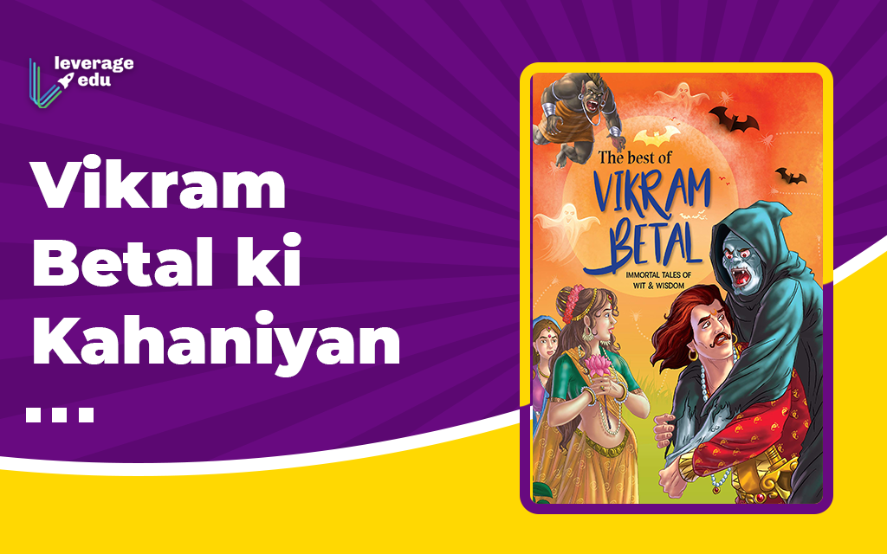

|
SacrificeValue is of the feeling in sacrificeVikram again came after him, caught him, put him on his shoulder and started walking. Vikram said angrily - "Why do you deceive me?" Vaitaal said - "I am very happy to see your justice, that is why I go back to the tree and celebrate it. Don't be angry, because you are a just King. But I pity you, that you are making untiring efforts without relaxing, as if you wish to achieve something. So just to pass time, listen to this story now." Vaitaal started his story and Vikram started listening. Vaitaal said - "Once a king lived in Vardhmaan city. His name was Roopsen. He was very kind and a gracious king. Hearing his praise, once Beerbal named soldier came to his kingdom and got very happy to find everything as he heard. One day he came to the palace and desired to see the king. He was taken to the royal court. Beerbal bowed the king and said - 26 "Raajan, I am very sad." "Why are you so sad?" Beerbal said - "I am very faithful, I can obey, I can work as a night watchman, but nobody is giving me any work." "Why doesn't anybody give you job?" "Because I demand 100 gold coins daily" Hearing this, king also compelled to ponder over the matter, then asked him - "How many members are in your family?" Beerbal said - "We are four, Sir. My wife, one son, one daughter and myself. I served the King Jayasen for many years. He has died now that is why I have come here to serve you." The king asked - "What did he give you?" Beerbal said - "I got 100 gold coins daily." The king said - "But nobody gives so much salary just for nightwatching." Beerbal said - "Even this money is less for my services." The king thought for a while and said to him - "OK, You will stay with me." Beerbal got very happy to get the job and all courtiers got very surprised to see the salary of a night watchmen. They started criticizing the King, but the King had already employed him. Beerbal used to keep watch the whole night and take his money in the morning and go away. One day the king asked his spy to spy on his new employee that what did he do of his money? He reported back, that Beerbal used to give 25 coins to poor, saying "Pray for the King Roopsen, that he should live long." He gave 25 coins in temples and 25 coins to Braahman. He gave 10 coins to widows and orphans, and another 10 coins to lepers and handicapped. The remaining 5 coins he gave to his wife. Roopsen got very happy to hear this, so he didn't feel any problem in giving 100 coins to him. He was very happy with Beerbal. Whenever he used to ask "Anybody is there?" Beerbal always replied "I am here, Sir." One day when Roopsen was sleeping comfortably that he woke up hearing the sound of a crying woman. Roopsen called as usual, "Anybody is there?" and Beerbal replied as usual, "I am here, Sir", Roopsen asked him to find out who was that woman who was crying at such a late night time? Beerbal proceeded towards the direction from where the sound was coming. It was coming from the cremation ground side, so he came there and saw a woman crying. She was wearing many ornaments from tip to toe. She was very beautiful, but there was no tear in her eyes. Surprised to see this, Beerbal asked her - "O Beautiful, Why are you crying like this?" She said - "My name is Lakshmee and I live in a royal family, but at this time Shani (Saturn) has attacked on that family. Roopsen's all kingdom will be lost and he will die in a very bad condition, that is why I am crying." Hearing this Beerbal asked - "Is there any solution of this problem, so that the King is saved." At this she said, "Yes, If somebody can sacrifice his own son with his own hand 27 then the King can be saved." Beerbal thought and thought and then turned around. In the meantime, Roopsen also thought, "Let me see what Beerbal does." so he followed him and witnessed all that conversation which took place between Beerbal and Lakshmee. When Beerbal returned from there he also followed him. Beerbal didn't go to the palace, he went straight to his house and told everything to his wife. The wife said - "Go and sacrifice our son. This is the opportunity to do our duty towards our master." They woke up their son and told him everything, so he also got ready to be sacrificed. All went to the Devee temple to sacrifice the son. First Beerbal worshipped Devee, then prayed her - "Hey Devee, Please save my king, I give you my son to save his life, be pleased with me." And he cut his son's neck with his own hand. O Vikram, Seeing this Beerbal's daughter also cut her neck that "when my brother is not there, what I will do to live." Beerbal's wife also died in the grief of her children. Now Beerbal thought, "My whole family has gone, what I will do in this world?" So he also cut his neck. Seeing this Roopsen also could not hold himself, he picked the same sword and cut his neck." After telling this much, Vaitaal got silent. They have come more than half way long. He said - "Vikram now tell me, whose sacrifice was most valuable - Beerbal's, son's, daughter's, wife's or king Roopsen's?" Vikram thought for a while and said - "In sacrifice, feeling is the main element. Among them whoever's feelings are highest, his sacrifice will be considered most valuable. Beerbal was faithful to his master, sister sacrificed because of love of her brother, mother had the feelings of motherly love for her children, Beerbal had lost his family that is why he sacrificed himself, but what was the feeling of the king? Why did he sacrifice himself? Sacrificing oneself for a servant is a strange thing for a master. That is why Roopsen's sacrifice was the most valuable." As the king spoke, his promise was broken so Vaitaal ran away laughing loudly from King's shoulder and hung upside down from the same tree. The King Vikramaaditya again got worried at this. He took out his sword and came back to the same place. Vikram asked - "Why did you run away?" "Hearing your judgment." "Was my judgment wrong?" "No, You were right, I admire you." "Is that why you came here?" "No, I came here because I didn't tell you the story further. One ghost lives here on this tree. He also asked me the same question which I asked you. He told me that he would tell me the further story after getting the right answer. I have given him the right answer, he has told me the story further, now you can take me." So the King again lifted that Vaitaal, put him on his shoulder, and started walking again. 28 "Now listen to that, O Vikramaaditya, what that ghost told me. Seeing all these sacrifices. Devee got pleased and he revived all of them. Roopsen was also happy to see all those people alive. He brought all of them in his palace. At this his minister got very angry, he said - "First you gave him 100 coins daily, now you have brought him and his family to your palace." King said - "You don't know, what is Beerbal for me? Whatever he has done for me, nobody else can do it for me any time." Minister got silent hearing this, but one other person got Beerbal killed. This time Beerbal could not be revived. Tell Vikram, Why?" Vikram said - "This is all fate There was no sacrifice in this one." "You are right." and Vaitaal again ran away jumping from king's shoulder. Vikramaaditya came back quickly to the same place only to find that Vaitaal was still hanging from the same tree. |

| Previous | Index | Next |